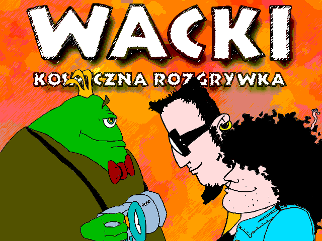
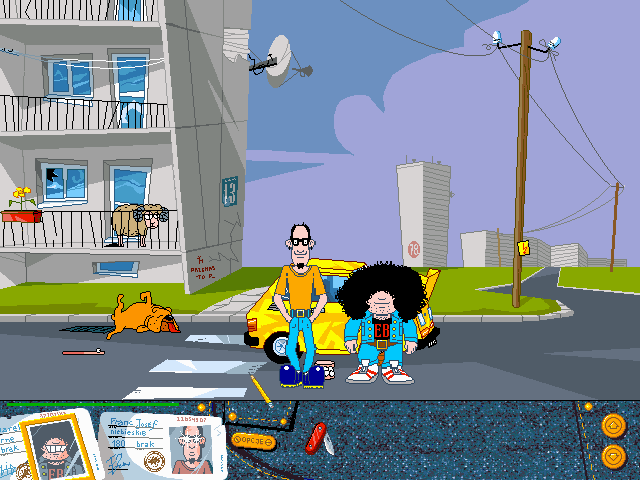

🪟
Windows
Windows 10 / 11 · 64-bit
Pobierzwacki-windows-x86_64.zip

Wierny, otwarty port silnika gry — odtworzony piksel po pikselu ze zdekompilowanej oryginalnej binarki. Gra się od intra do napisów końcowych na macOS, Linux i Windows, a także na Miyoo, Anbernic i dziesiątkach innych handheldów.
Wacki: Kosmiczna rozgrywka to polska gra przygodowa typu point-and-click, wydana 1 lipca 1998 przez studio Seven Stars Multimedia na komputery z Microsoft Windows.
Akcja rozgrywa się na polskim osiedlu, gdzie dwaj nastolatkowie — Franc i Edek — spotykają kosmitę Aargha. Obcy prosi ich o pomoc w odnalezieniu części zagubionego urządzenia ACME (Atomowego Czasoprzestrzennego Modyfikatora Energii), które uległo rozpadowi.
Sterujesz dwiema postaciami naraz, eksplorujesz kolejne lokacje, rozwiązujesz zagadki, zbierasz przedmioty i prowadzisz dialogi. Gra jest pełna absurdalnego humoru i odwołań do polskiej kultury lat 90.
To niezależny port silnika napisany od zera w
C/SDL2, odtworzony ze zdekompilowanego WACKI.EXE. Jest
funkcjonalnie kompletny — gra przechodzi się od
intra do napisów końcowych z większością mechanik i detali
oryginału.
Plik Wacki.sav jest byte-identyczny z oryginałem z
1998 r. Stan zapisany w porcie wczytasz w oryginalnym
WACKI.EXE i odwrotnie — możesz zacząć etap na PC, a
dokończyć na handheldzie.
Wybierz paczkę dla swojego sprzętu. Rozpakuj w dowolnym katalogu — nie trzeba nic instalować.
Dane_*.dta. Jak to zrobić —
patrz Jak grać.
Windows 10 / 11 · 64-bit
Pobierzwacki-windows-x86_64.zip
Apple Silicon (M1+)
Pobierzwacki-macos-arm64.tar.gz
x86_64
Pobierzwacki-linux-x86_64.tar.gz
Mini / Mini Plus · OnionOS
Pobierzwacki-miyoo.zip
PortMaster (muOS, ROCKNIX…)
Pobierzwacki-portmaster.zip
Wszystkie wydania i pełna historia zmian: github.com/mszula/wacki/releases. Wolisz zbudować ze źródeł? Zajrzyj do BUILDING.md.
Wacki przechodzi się od początku do końca także na dziesiątkach kieszonkowych konsol. Sterujesz gałką lub krzyżakiem, przyciski A/B to klik lewy i prawy, a zapis przenosisz między PC a handheldem w obie strony.
Na większość sprzętu użyjesz paczki
PortMaster
(wacki-portmaster.zip) — muOS, ROCKNIX, ArkOS,
JELOS i inne. Dla Miyoo z OnionOS jest osobna paczka
(wacki-miyoo.zip). W obu wrzucasz port, dorzucasz
pliki Dane_*.dta i grasz — paczki są w sekcji
Pobierz, a instrukcje per urządzenie w
README.
Ściągnij paczkę dla swojego systemu z sekcji Pobierz i rozpakuj ją w dowolnym folderze.
Skopiuj pliki Dane_*.dta z oryginalnej płyty do
podkatalogu data/ obok gry. Na macOS po prostu
wrzuć folder data/ obok Wacki.app.
Wielkość liter w nazwach nie ma znaczenia.
Windows: dwuklik wacki.exe. macOS: dwuklik
Wacki.app. Linux: ./wacki. Przy
pierwszym starcie gra zapyta o tryb wyświetlania (pełny ekran
/ okno).
Binarki nie są podpisane certyfikatem Apple (port jest darmowy),
więc przy pierwszym starcie Gatekeeper zablokuje aplikację. To
jednorazowe: otwórz
Ustawienia systemowe → Prywatność i bezpieczeństwo, przewiń na dół i kliknij „Otwórz mimo to".
Alternatywnie w terminalu:
xattr -dr com.apple.quarantine Wacki.app.
Pełna instrukcja dla każdej platformy (w tym Miyoo i PortMaster), opcje uruchomienia i rozwiązywanie problemów — w pełnym README na GitHubie.

| Ruch kursora | mysz |
| Kliknięcie (idź / akcja) | LPM |
| Przełącz postać | Spacja / PPM |
| Quick-save / quick-load | F5 / F9 |
| Menu pauzy | F12 |
| Pełny ekran | F11 |
| Wyjście z gry | Esc |
| Ruch kursora | gałka / krzyżak |
| Kliknięcie (idź / akcja) | A |
| Przełącz postać | B |
| Menu pauzy | START |
| Quick-save | R1 |
| Quick-load | L1 |
| Wyjście z gry | MENU / START+SELECT |
Dane_*.dta?Z własnej, oryginalnej płyty z grą Wacki: Kosmiczna rozgrywka. Port nie zawiera i nie rozprowadza materiałów z gry — to silnik, do którego podajesz własne dane. Pliki znajdziesz w głównym katalogu płyty.
To normalne dla niepodpisanych, darmowych aplikacji. Otwórz
Ustawienia systemowe → Prywatność i bezpieczeństwo, przewiń na dół i kliknij „Otwórz mimo to".
Albo w terminalu:
xattr -dr com.apple.quarantine Wacki.app. Blokada
jest jednorazowa.
Tak! Format Wacki.sav jest byte-identyczny z
oryginałem z 1998 r. Zapisy działają w obie strony — z oryginału
do portu i z portu z powrotem do WACKI.EXE.
Na PC: macOS (Apple Silicon), Linux x86_64, Windows 10/11. Na handheldach: Miyoo Mini / Mini Plus (OnionOS) oraz — przez PortMaster — Anbernic (RG35XX, RG40XX, RG353x i wiele innych), Powkiddy, TrimUI, RGB30, Miyoo Flip i dziesiątki kolejnych urządzeń.
Otwórz zgłoszenie na
GitHubie. Dołącz wersję portu, platformę i — jeśli to błąd wizualny —
zrzut ekranu. Szczegóły (gdzie znaleźć wacki.log) są
w README.
Wacki portuję po godzinach, za darmo i z czystej miłości do tej zwariowanej gry. Jeśli przywołał uśmiech (albo łezkę nostalgii), możesz dorzucić się na kawę — to paliwo do kolejnych poprawek i portów.
☕ Postaw kawę na Suppisuppi.pl/mszula